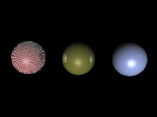

Environment Shaders
This section
shows a basic workflow to use environment shaders.
References:
mental ray User Manual, Chapter 3.12.
mental ray Shaders Guide, Chapter 1.3.
Rendering with mental ray, Chapter 4.7, Appendix C
Where to find environment shaders
Material shaders appear in the Hypershade > Create mental ray Nodes >
Environments.
The following environment shaders are shipped with Maya:
- mib_lookup_background
- mib_lookup_cube1
- mib_lookup_cube6
- mib_lookup_cylindrical
- mib_lookup_spherical
Default behavior
The proper connection for an environment shader is:
- from environmentShader.message to shadingEngine.miEnvironmentShader.
- from environmentShader.message to cameraShape.miEnvironmentShader.
Ctrl+drag from a material
shader to a shading engine to make the above connection.
Image based lighting (under Image Based Lighting in the
mental ray Render Globals) feature introduced in
mental ray for maya 6.0 works in a similar way to
mib_lookup_spherical, but with more features and
simpler workflow.
In this section, we explore the workflow for setting environment mapping
using mib_lookup_spherical.
Step 1. Getting Ready
Make sure the mental ray for Maya plug-in is
loaded.
- Windows > Settings/Preferences >
Plug-in Manager...
- Find Mayatomr and check loaded
Open the template
scene we will use for this section: environment_start.ma.
Render
with mental ray.
|

|
|
environment_start.ma
|
As shown in the image, the two spheres on
the left are reflective.
The reflection is achieved by using mib_reflect. Please read sampleCompositing.html if you are not familiar
with this shader.
Environment mapping would not be applied unless the material is reflective.
Step 2. Local environment map
First, let's try a local environment map, which applies to a
given material (or shading engine) only.
If the ray leaving an object with the material does not intersect anything,
the color from the environment shader is returned.
Now Render
with mental ray.
The checker is sphere mapped to the red sphere.
|

|
|
Local
environment map
|
·
reflect attribute of mib_reflect shader decides the contribution from
the reflection. Decreasing
the value means less contribution from the environment.
·
Turn on notrace of red_reflect
to disable any other reflection than the environment.
Render
again, and notice the sphere has a less obvious checker pattern, and no
reflection of the red ball.
|

|
|
Local
environment map
|
Notice also that the yellow and the blue balls are not
affected by the environment shader of the red ball, except the reflection
of the red ball on it.
Step 3. Global environment map
Another way of using an environment shader is to connect it to
a camera shape.
Environment shader connected in this way is used by a primary ray that did
not hit anything.
It's similar to image plane in Maya. (mib_lookup_background
is closer to image plane.)
If an object has reflective material, the environment shader affects the
reflection, as long as the material does not have its own environment
shader.
Render.
|

|
|
Local
and global environment map
|
- Notice that the background is filled with camera_tex. As camera_env
is connected to perspShape, the global
environment shader only affects rays originated from the persp camera. If render from different camera, the
background is black.
- Now the ball in the middle has reflection
from the environment. For an environment mapping to affect a material,
the material should be reflective. The yellow sphere as mib_reflect
connected to the material shader (yellow_phong),
whereas the blue sphere has a phong shader
only.
- The red sphere on the left, in the other
hand, has its own environment shader, and is not using the global
environment map at all. Instead, the local environment mapping
overrides the global one.
environment_finish.ma shows the final state of this tutorial.
|